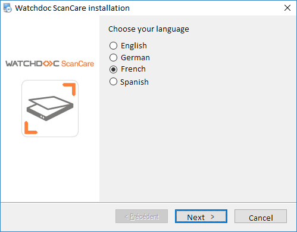
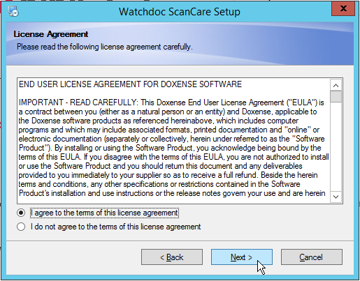
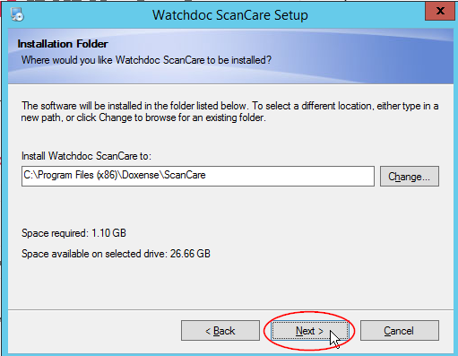
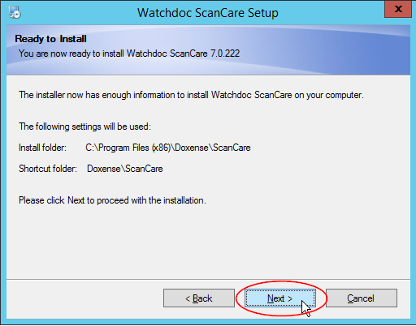
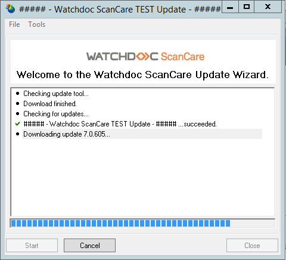
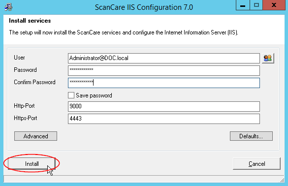
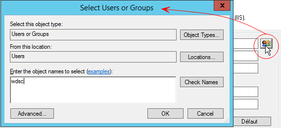
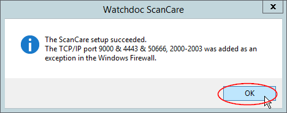
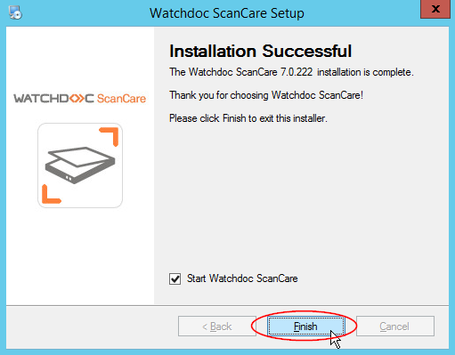
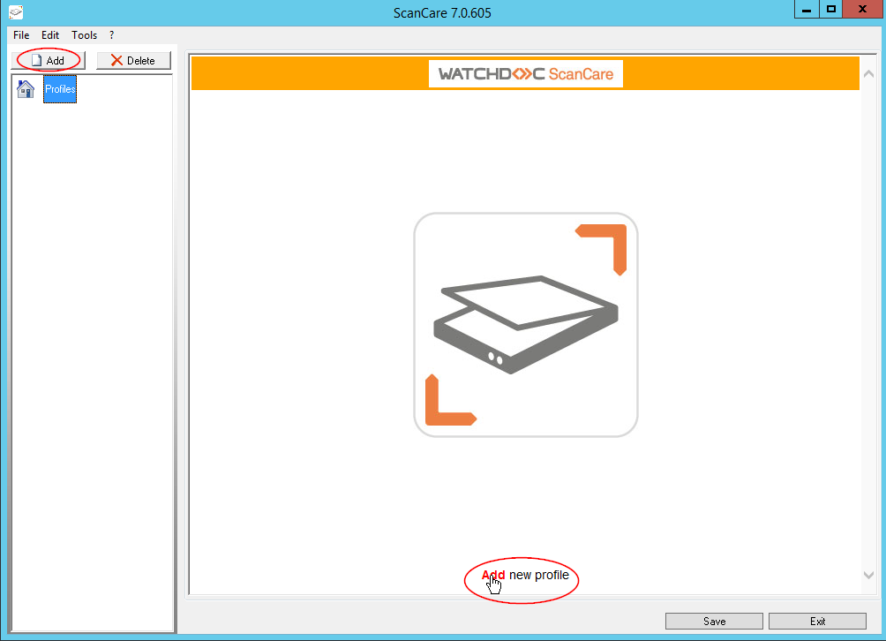

Installing and configuring Watchdoc ScanCare®
Installing Instructions
The Watchdoc ScanCare installation file comes as a setup[...].exe installation file. Save this file in one of the server directories.
-
Once the installation is finished, you need to register the license.
-
connect to the server with the service account and make sure that you have administrator rights;
-
close all of the applications that may be active on the server and ensure that there are no open dialogue boxes;
-
go to the folder where you saved the installation file and double-click on the Setup.exe program located there;
-
confirme the .exe file execution;
-
from the Watchdoc ScanCare Installation dialogue box, choose the solution installation language and click on Next;

-
Follow the instructions provided in the interface called Welcome, then click on Next;
-
read and accept the terms of the license agreement, then click on Next;

-
wait for the installation program to proceed.
-
From the Watchdoc ScanCare Setup>Installation Folder, click on Next to install the application in the folder shown by default. If you do not wish to install the application in this folder, click on Change to brows for the location (on the server or the network) where you wish to install Watchdoc ScanCare then click on Next,

-
The Ready to Install dialogue box informs you that the program will be run. Click on Next to continue the installation.

-
The Watchdoc ScanCare Installer is displayed. Wait for the installation program to proceed.
-
The program prompts you to check for updates available online. If you choose to check for updates, the Wizard will prompt you to install any updates it finds. Then the results of this check and/or the update is displayed in a dialogue box:

-
Once this check is finished, the installation continues and the ScanCare IIS Configuration 7.0 dialogue box is displayed.
Configuring instructions
Configuring IIS for Watchdoc ScanCare
-
From the ScanCare IIS Configuration 7.0 dialogue box, specify the information relating to the server account:
-
User: Server account name (login);
-
Password: Account password (set when the server account was created);
-
Confirm Password: Enter the new password once again;
-
Save Password: Tick this box to save having to enter the password every time you connect;
-
Then set the ASP.NET web configuration:
-
Http-Port: port 9000 by default;
-
Https-Port: port 4443 by default.
-
-
Click on the Install button to validate the installation of IIS services.

If you don't know the user name, you also have a selection tool that lets you choose one from a directory.

è Watchdoc ScanCare informs when the setup is successful and once TCP/IP ports 9000 and 4443 have been added as exceptions in the Windows Firewall.

è The tools starts the Watchdoc ScanCare installation wizard. Once the installation is finished, a message informs the user that the operation was successful. Click on Finish to finalise it.

-
If the Start Watchdoc ScanCare box is ticked, the configuration web interface opens along with a dialogue box that prompts you to register the application using a license.
-
If the Start Watchdoc ScanCare box is not checked, the dialogue box will close. To access the tool's web setup interface, click on the ScanCare shortcut
 added to the desktop during installation. You can then access the setup interface and a dialogue box prompting you to register the application using a license (see Registering and managing licenses).
added to the desktop during installation. You can then access the setup interface and a dialogue box prompting you to register the application using a license (see Registering and managing licenses).
è A dialog box also prompts you to setup the Email alerts Option (see next part).